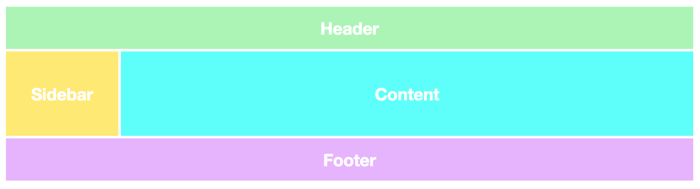
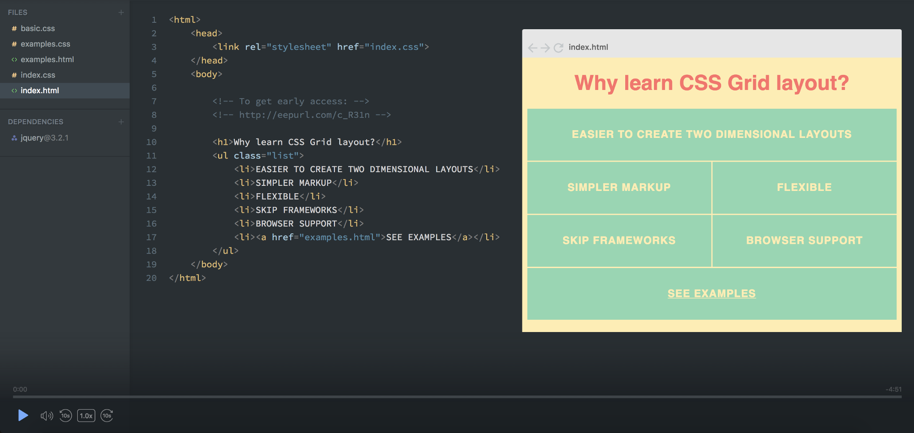
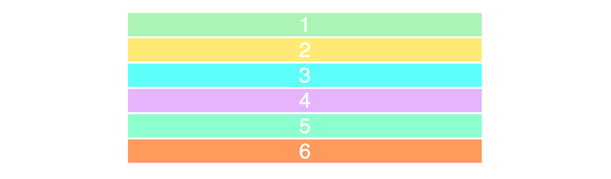
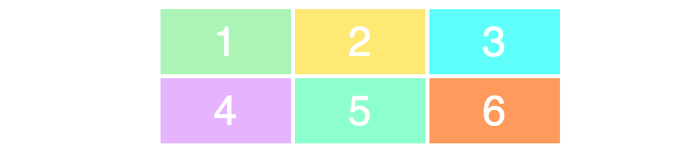
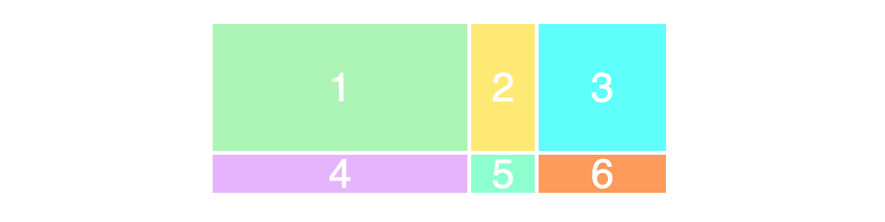
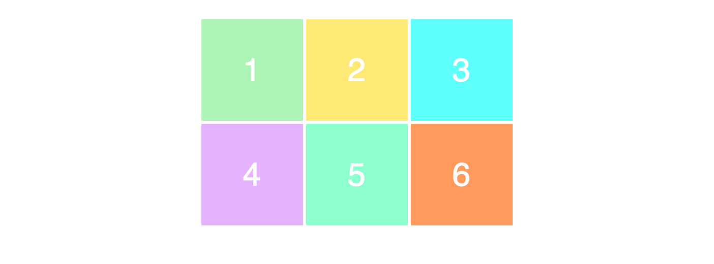
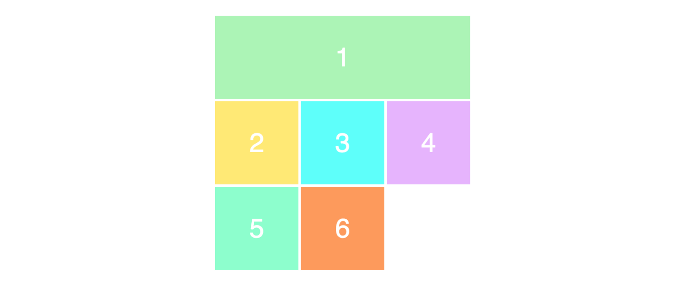
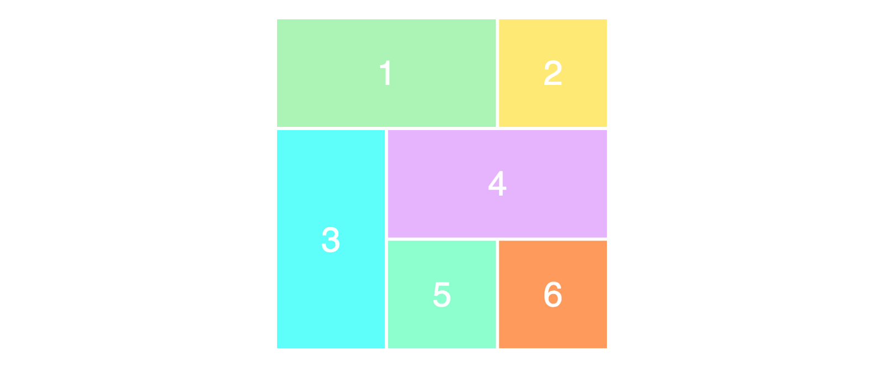

【译】5分钟入门CSS Grid网格布局
原文地址 https://medium.freecodecamp.org/learn-css-grid-in-5-minutes-f582e87b1228
简短介绍一下web布局的未来

网格布局是网站设计的核心，而CSS Grid网格布局模式是实现网格布局最简单而有效的方式。
今年主流浏览器(Safari, Chrome, Firefox)已经支持原生CSS Grid网格布局，所以我坚信不久的将来，所有前端开发者都不得不去学习这个技术。
本文我将快速的讲一下最基本的CSS Grid的知识，超出基础知识之外的都不在本文的范围内。
我正在开发一门深入学习CSS Grid的免费课程，预计12月份发布。你可以看一下这门课的预览

对了，如果你想早点儿参加这门课程，可以在这里留下你的email
正文开始！
你的第一个网格布局
CSS Grid网格布局的两个核心是网格容器（父级）和网格项目（子级），网格容器是实际上的网格，网格项目是网格中的内容。
下面是包含6个网格项目的网格容器的html代码
<div class="wrapper">
<div>1</div>
<div>2</div>
<div>3</div>
<div>4</div>
<div>5</div>
<div>6</div>
</div>把容器div转化为网格，只需要设置display属性为grid:
.wrapper {
display: grid;
}好，但是看起来没什么特别，因为我们还没有设置我们想要网格展现的样子，它目前就只是6个div罗列在一起。

我加了一点css样式，但是跟grid没什么关系
行跟列
要生成二维网格布局，我们需要定义行跟列。我们来写一个2行3列的布局，将使用grid-template-row和grid-template-column两个属性来实现。
.wrapper {
display: grid;
grid-template-columns: 100px 100px 100px;
grid-template-rows: 50px 50px;
}我们给grid-template-column属性设置了三个值实现三列；给grid-template-row属性设置了两个值实现两行。
这两个属性的值决定了我们的列宽（100px）和行高（50px），下面是效果：

我们看下面的例子，来检查一下你是否真的正确理解了，这两个属性值和网格布局样式之间的关系：
.wrapper {
display: grid;
grid-template-columns: 200px 50px 100px;
grid-template-rows: 100px 30px;
}试着理解代码和布局样式之间的联系，想一下这段代码会实现什么样的布局。 这是这段代码表现出来的样子：

定位项目
我们接下来要学习的是，如何在网格中定位网格项目（item），这才是使得网格布局变得非常简单的‘黑科技’。
让我们用上文学习的代码构造一个3x3的网格：
.wrapper {
display: grid;
grid-template-columns: 100px 100px 100px;
grid-template-rows: 100px 100px 100px;
}这段代码实现的布局表现如下：

注意到，我们在页面上只能看到一个3x2的网格，然而我们设置的是3x3的网格。这是因为我们只有6个项目来填充网格，如果我们有9个项目，那么最后一行也会被填满了。
想要定位和调整项目，我们需要将这个项目标定出来并设置grid-column和grid-row属性：
.item1 {
grid-column-start: 1;
grid-column-end: 4;
}这段代码的意思是，我们想让item1从列线1开始，延伸到列线4。换句话说，就是铺满一行，下面是代码运行的效果：

为什么我们只设置了3列却有4条列线呢？看下图中的黑色的线，就是列线。

注意到我们现在占用了网格的所有行啦，当我们让第一个项目占据整个第一行的时候，它就把其他的项目挤到下边去了。
最后，上面那段代码可以简写为：
.item1 {
grid-column: 1 / 4;
}为了确保你真的理解了这个概念，我们稍微重新排列一下项目。
.item1 {
grid-column-start: 1;
grid-column-end: 3;
}
.item3 {
grid-row-start: 2;
grid-row-end: 4;
}
.item4 {
grid-column-start: 2;
grid-column-end: 4;
}下图是上面这段代码执行的效果。快动脑筋努力思考下它为什么实现成这样，一点也不难啦。

就酱！
我们没讲的概念还有很多啦，如果你想进一步学习的话，在这里留下你的email，我在Scrimba发布免费的CSS Grid课程的时候会通知你。
有任何问题请评论，我会尽可能回答 ：）